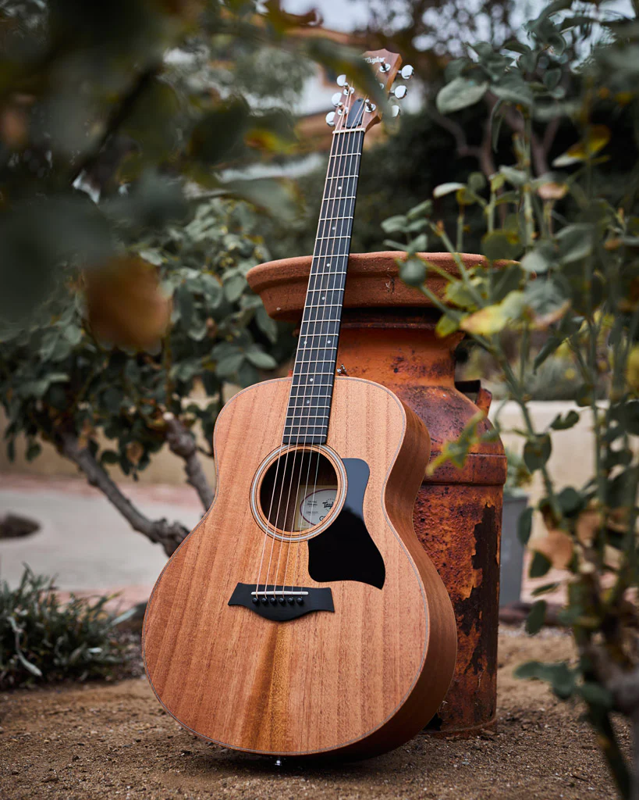

I have been fond of the outdoors since the moment I could form memories.
Growing up we were constantly on the move visiting new places and
national parks. I recently summited Half Dome in Yosemite National Park,
which is a feat I never thought I would get the chance to achieve. I was
never one to sit still or remain stagnant in life and in work, which is
why I am constantly on the lookout for opportunity for growth.

When I was in 8th grade I picked up my brother's guitar and fell in love
with the creation of music for the first time. I later taught myself how
to not only play guitar but also piano. I used to sneak off into the
music building in high school to the practice rooms when they were open
and that is where I taught myself to play the piano. Learning an
instrument creates new neural connections which improve both memory and
focus.